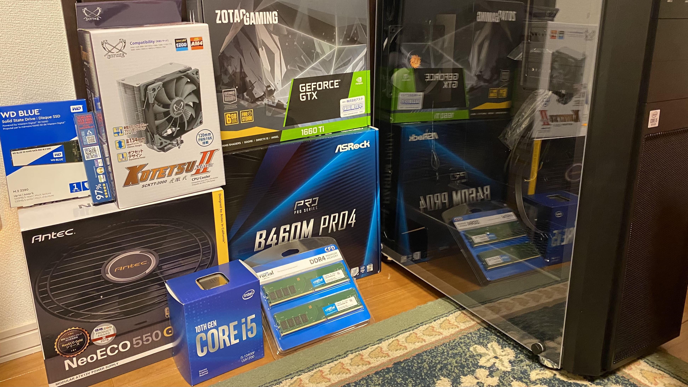
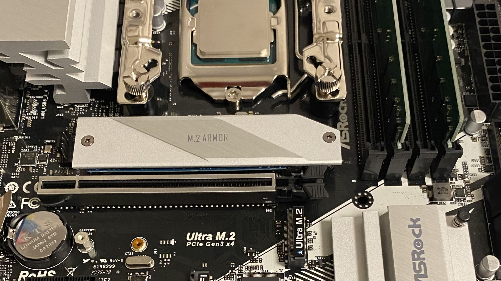
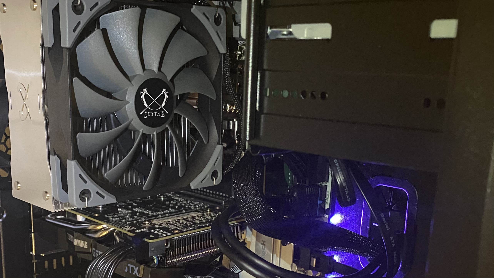
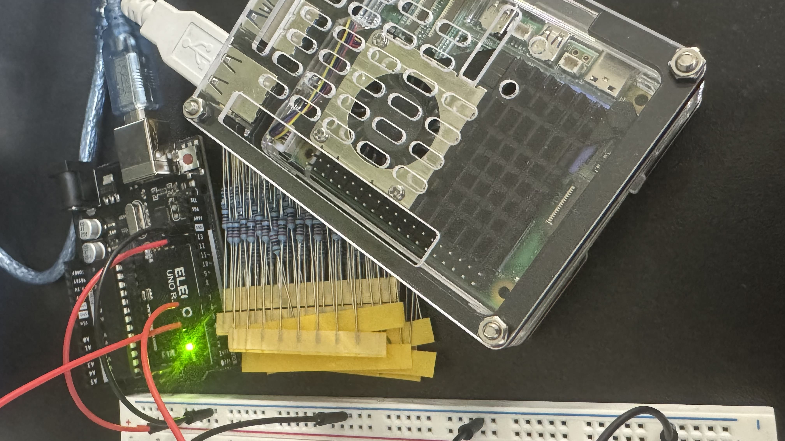

中学1年製の時にYoutuberの吉田製作所の動画を見て、自作PCに興味を持ちました。
家族にPCが詳しい人がいなかったので、
自分で調べてパーツを選び、
中学2年生の時に初めて自作PCを完成させました。

(自作PCのパーツ)
LINEのオープンチャットで自作PCのコミュニティに参加し、
そこで色々な人にアドバイスをもらいながら、
部品を選び組み立てました。

(自作PCの中身)
その結果、ゲームも快適にプレイできるPCになりました。
自作PCの魅力は、自分の好きなパーツを選んで
自分だけのPCを作れることです。
また、パーツの交換やアップグレードも簡単にできるので、
長く使い続けることができます。

(初めて作った自作PC)
使用したパーツを紹介します。
コロナ前で半導体がおそらく一番安い時期に組み立てることができて
すごく安く組み立てることができました。
| カテゴリ | 製品名 / 型番 | 主な仕様 | 価格 |
|---|---|---|---|
| CPU | Intel Core i5-10400F（BOX）BX8070110400F | 第10世代 Comet Lake-S / 2.9GHz / 6C12T | 19,980円 |
| CPUクーラー | サイズ 虎徹 Mark II | オリジナルクーラー | 3,973円 |
| メモリ | CFD販売 W4U2666CM-8G（8GB ×2） | DDR4-2666（PC4-21300）/ 288pin / Crucial by Micron | 6,936円 |
| マザーボード | ASRock B460M Pro4 | Intel 第10世代対応 / B460 / Micro ATX | 10,245円 |
| SSD | WD Blue SATA M.2 1TB（WDS100T2B0B-EC） | M.2-2280 / SATA / 国内正規代理店品 | 12,791円 |
| グラフィックボード | ZOTAC GAMING GeForce GTX 1660 Ti 6GB（VD6900） | GDDR6 6GB | 30,660円 |
| 電源 | NE550 GOLD | 80PLUS GOLD認証 / 550W | 8,945円 |
| 無線LAN | OKN Wi-Fi 6 PCIe（Intel AX200 / BT5.1） | 802.11ax / 最大2,974Mbps / Bluetooth 5.1 | 3,880円 |
| PCケース | Thermaltake Versa H26 Black（CS7070） | ミドルタワー / ケースファン付属 / ブラック | 4,400円 |
| グリス | ARCTIC MX-4 4g | 熱伝導率 8.5 W/m·K | 1,299円 |
| 光学ドライブ | ASUS DRW-24D5MT | Windows 10対応 / M-DISC対応 / SATA / 最大24倍速 | 1,973円 |
| 合計 | 105,082 | ||
| ※ 価格は2020年12月時点のAmazon.co.jpの税込価格 | |||
あとなんか趣味で音楽？の記事も書いたりしているので出しておきます。
音楽は時代でどう変わった？昭和と令和のJ-Popの違いをPythonで分析してみた
データ分析で読み解くaespaのサウンド変遷
Spotify
APIを使用しておすすめの曲のプレイリストを作成する
Spotify
APIを使用して1年間で一番よく聞いたアーティスト、楽曲を50人、曲ずつ調べる
まだ初心者ですがマイコンもちょっと触ったりしてます。

(Arduinoとラズパイ5)
これからも色々な機械に触れていきたいと思います。